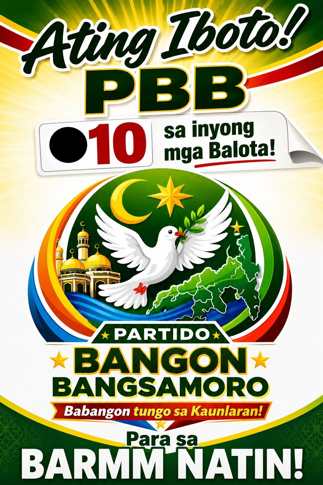

Setyembre 14, 2026
Gabay sa unang parliamentaryong halalan ng Bangsamoro
Ang pahinang ito ay pang-edukasyon, hindi pangkampanya. Kahit hindi ninyo kami iboto, gusto naming makaboto kayo — at makaboto nang tama.

Ang COMELEC ang opisyal na pinagmumulan.
Bilang partido, hindi namin kayang asikasuhin ang inyong rehistrasyon o baguhin ang anumang talaan. Para sa rehistrasyon, presinto, at karapatang bumoto, ang Commission on Elections ang may awtoridad. Ang nasa ibaba ay gabay lamang para hindi kayo maligaw.
Bago ang Setyembre 14
Apat na hakbang para maging handa
1. Suriin kung rehistrado ka
Kung hindi ka nakaboto noong nakaraang halalan, maaaring deactivated na ang iyong rekord. Alamin ito sa COMELEC bago pa magsara ang panahon ng pagwawasto.
2. Hanapin ang iyong presinto
Nasa voter's ID o voter certification mo ito, o sa precinct finder ng COMELEC. Alamin din kung saang paaralan ito nakalagay.
3. Ihanda ang iyong ID
Magdala ng balidong ID sa araw ng botohan. Ang listahan ng tinatanggap ay itinatakda ng COMELEC — tingnan ito nang maaga, hindi sa mismong araw.
4. Alamin ang mga kandidato
Basahin ang platform, hindi lang ang tarpaulin. Ang sa amin ay nasa pahina ng BANGON platform; may ganito rin ang ibang partido, at karapatan ninyong ihambing.
Paano gumagana
Ang parliamentaryong sistemaa?/h2>
Sa mga nakaraang halalan, boboto kayo ng tao. Sa parliamentaryong sistema, boboto rin kayo ng partido — at ang bilang ng upuan ng bawat partido sa parlamento ay nakabatay sa kabuuang boto nito sa buong rehiyon.
Ang praktikal na kahulugan nito: mahalaga ang boto mo kahit malayo ang panalo sa inyong distrito. Sa lumang sistema, ang natalo sa inyong lugar ay wala nang bunga. Sa party-list na bahagi, bawat boto ay bumibilang sa kabuuan.
May bahagi rin ng upuan na para sa kinatawan ng bawat distrito, at may nakalaang upuan para sa ilang sektor. Ang eksaktong bilang ng upuan sa bawat kategorya ay itinatakda ng batas at inaanunsyo ng COMELEC — tingnan ang COMELEC para sa pinal na bilang, dahil nagbago ito kasunod ng mga pagbabago sa saklaw ng rehiyon.
Sa araw ng botohan
Ligtas at malinis na halalan
Walang armadong grupo sa botohan
Walang kondisyon ito at hindi ito nakadepende sa kung kanino kumakampi ang grupo. Kung may pananakot, iulat sa COMELEC at sa awtoridad.
Huwag ibenta ang boto
Krimen ang pagbili at pagbebenta ng boto. Kung may magpakilalang taga-PBB at mag-alok ng pera, hindi siya sa amin — iulat ito sa amin at sa COMELEC.
May hotline kami buong araw
0966 301 8777 — bukas sa buong araw ng eleksyon para sa tanong at sa ulat ng insidente. May taong sasagot.
Kung nasa panganib kayo ngayon, huwag munang mag-message — tumawag sa lokal na pulisya o sa emergency hotline muna. Ang aming hotline ay para sa tanong at ulat, hindi kapalit ng emergency response.
Mga madalas itanong
Tungkol sa pagboto
Kailan ang halalan sa Bangsamoro?
Setyembre 14, 2026 — ang unang parliamentaryong halalan ng Bangsamoro. Para sa opisyal na oras ng botohan at anumang pagbabago, sumangguni sa COMELEC.
Paano ako makakaboto? Ano ang dala ko?
Kailangang rehistradong botante ka sa iyong presinto. Magdala ng balidong ID. Ang eksaktong listahan ng tinatanggap na ID at ang proseso sa presinto ay itinatakda ng COMELEC — tingnan ang comelec.gov.ph o ang inyong lokal na COMELEC office. Bilang partido, hindi namin kayang asikasuhin ang inyong rehistrasyon.
Saan ko malalaman ang aking presinto?
Sa precinct finder ng COMELEC, o sa inyong lokal na COMELEC office. Nakasulat din ito sa inyong voter's ID o voter certification. Kung hindi ninyo mahanap, tumawag sa aming hotline at tutulungan namin kayong hanapin — pero ang COMELEC pa rin ang opisyal na pinagmumulan.
Ano ang pinagkaiba ng party-list at district na boto?
Sa parliamentaryong sistema ng Bangsamoro, may bahagi ng upuan na napupunta sa mga partido ayon sa bilang ng boto nila sa buong rehiyon (party-list), at may bahagi na napupunta sa kinatawan ng bawat distrito. Ibig sabihin, ang boto mo para sa partido ay mahalaga kahit malayo ang panalo sa inyong distrito. Ang eksaktong bilang ng upuan ay itinatakda ng batas at ng COMELEC.
Ligtas ba ang bumoto sa aming lugar?
May mga munisipyo sa Lanao del Sur at Maguindanao del Sur na inuuri ng awtoridad bilang mas mataas ang panganib. Ang paninindigan namin ay walang kondisyon: walang armadong grupo ang may lugar sa botohan, kahit kanino pa ito kumakampi. Kung may makita kayong pananakot o insidente, iulat ito sa COMELEC at sa awtoridad — at puwede rin ninyong tawagan ang aming hotline sa buong araw ng eleksyon.
Binabayaran ba ng PBB ang boto?
Hindi, at hindi namin ito gagawin. Ang pagbili ng boto ay krimen sa ilalim ng Omnibus Election Code at kabaligtaran ng lahat ng ipinaglalaban namin. Kung may magpakilalang taga-PBB at mag-alok ng pera para sa boto ninyo, hindi siya sa amin — iulat ito sa 0966 301 8777 at sa COMELEC.
Mag-message sa amin
May tanong tungkol sa halalan? Mag-message sa amin — pero para sa rehistrasyon at presinto, ang COMELEC pa rin ang opisyal na sagot.
Karaniwang sumasagot kami sa loob ng ilang oras. Para sa madalian — insidente, reklamo, o usaping pangkaligtasan — tumawag sa 0966 301 8777; may taong sasagot, hindi awtomatikong mensahe.